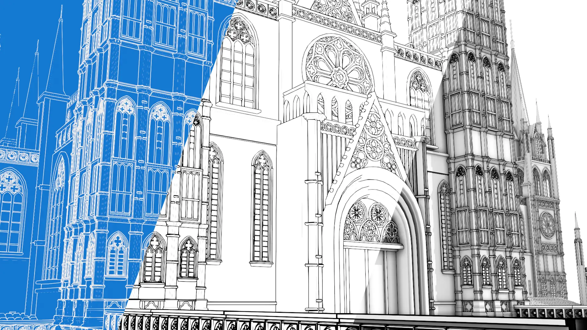
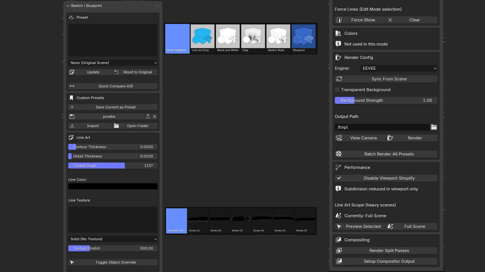
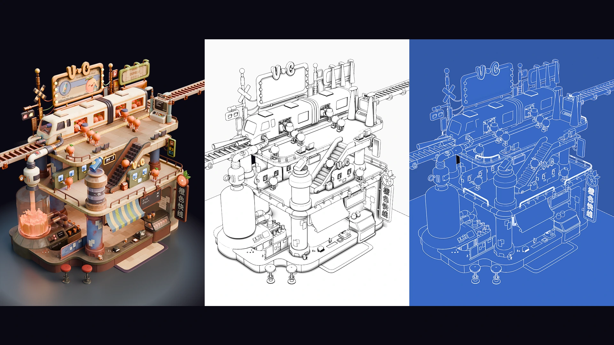
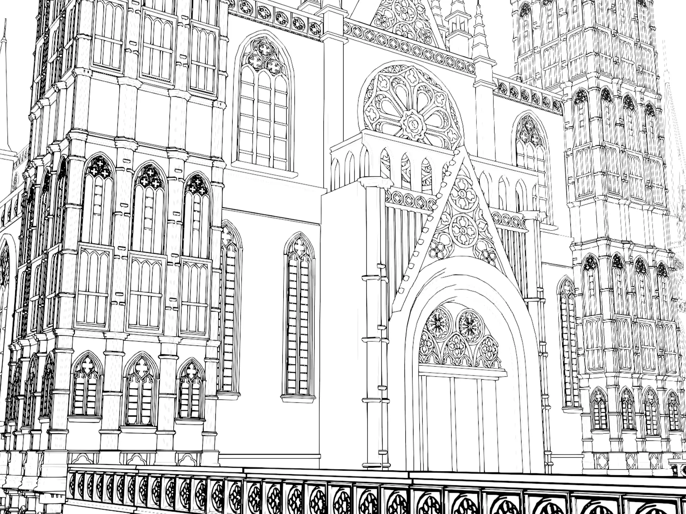
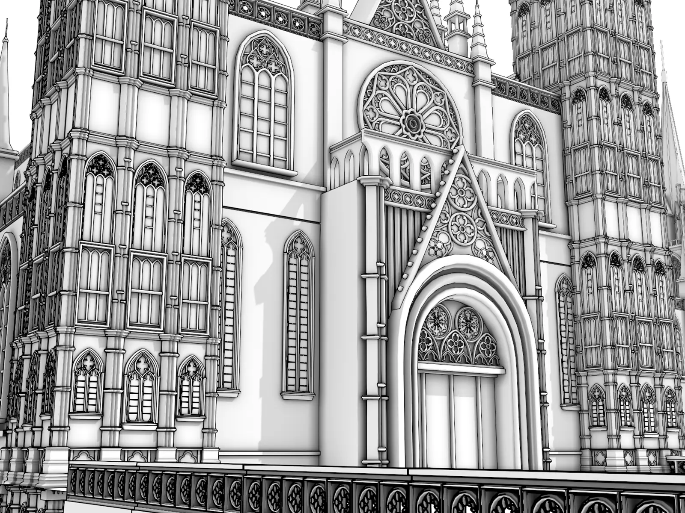
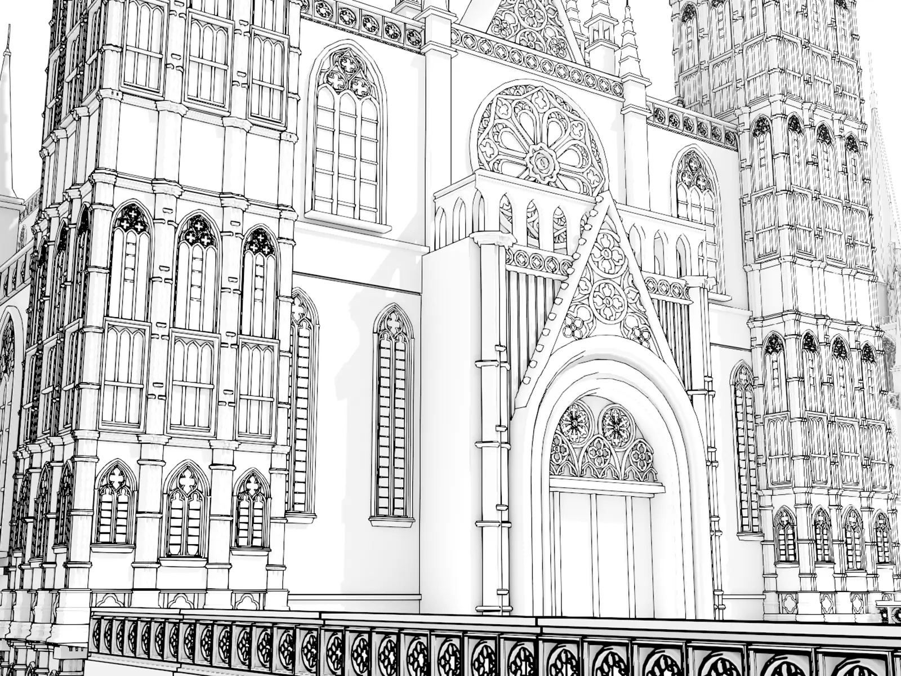
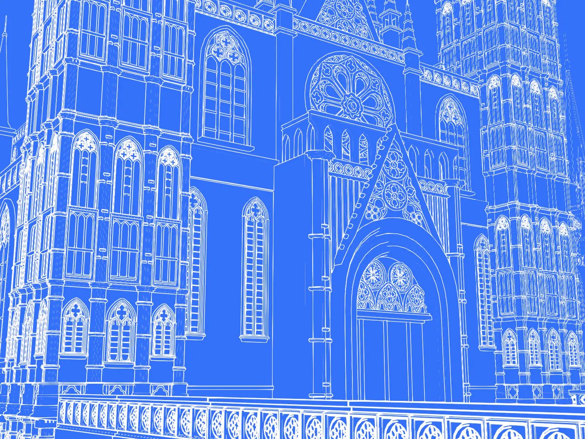
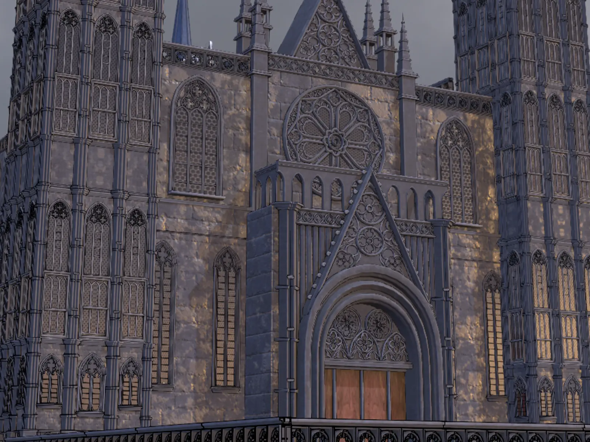
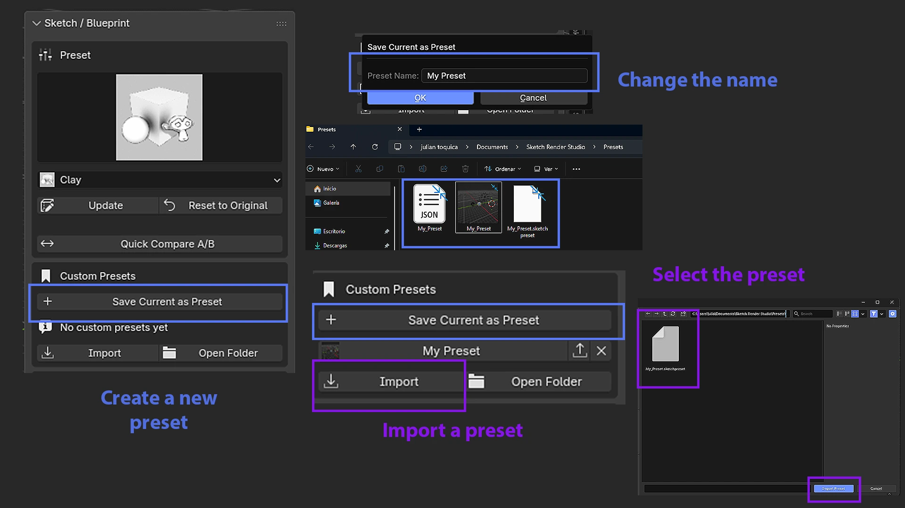

Sketch Render Studio
Sketch Render Studio is a Blender addon that automates the native Line Art (Grease Pencil) system to turn any 3D scene into a stylized sketch, blueprint, clay, or lines-only render — no manual material, modifier, or compositing setup. Works in both EEVEE and Cycles.

Key features
- 5 built-in presets: Black and White, Clay, Sketch Style, Blueprint, and Line Art Only.
- Custom presets: save your own looks with an automatic thumbnail, in an external file that survives addon updates.
- Export/Import a single preset as a portable file (
.sketchpreset) to share with someone else or between your own machines. - Line texture library (6 styles) with adjustable stretch and pixel size — gives the irregular, hand-drawn line effect.
- Quick Compare (A/B): instantly toggle between the original scene and the preset result.
- Parametric sun for Sketch Style: strength and X/Y/Z rotation sliders, instead of rotating the object by hand.
- Force Show / Clear for specific lines via Freestyle marks, with dedicated buttons — no need to go through the Edge menu manually.
- Multi-camera batch render: renders every camera in the scene across all 4 material presets, in one click.
- Render Split Passes: generates 2 PNGs (lines and beauty rendered separately) without touching the compositor.
- Line Art Scope: isolates the Line Art calculation to just the selected objects while you tune parameters on heavy scenes, and restores it to the full scene with one click.
- One universal package: compatible with Blender 4.3 through 5.2+, no need to download different versions per Blender release.
Blender compatibility
Compatible with Blender 4.3 and later (tested on 4.3, 4.5 LTS, and 5.2 LTS). Works on Windows, macOS, and Linux.
System requirements
| Blender | 4.3 or later — universal package, tested up to 5.2 LTS |
|---|---|
| Operating systems | Windows, macOS, Linux |
| Render engine | EEVEE or Cycles |
Installation
- Download the Sketch Render Studio
.zipfrom Superhive. - In Blender:
Edit > Preferences > Add-ons. - Click the top-right dropdown menu >
Install from Disk… - Select the
.zipand confirm. - Verify it's enabled by finding “Sketch Render Studio” in the list.
Verifying the installation
The panel appears in the 3D Viewport's Tool Shelf (N key), in the tab with the addon's icon, under the name “Sketch Render Studio”.
Video tutorial
User interface
Accessing the panel
The Sketch Render Studio panel is located in the 3D Viewport, inside the Tool Shelf (N key), in the tab with the addon's icon.

Panel layout
- Preset: visual selector (thumbnail grid) + dropdown for the 5 presets.
- Custom Presets: save/load/export/import/delete your own presets.
- Line Art: contour/detail thickness, crease angle, line color and texture, Force Show/Clear.
- Colors: shading and background color (varies by active preset).
- Lighting: parametric sun (strength + X/Y/Z rotation), only visible when the preset uses it.
- Render Config: render engine, transparent background, background strength, output path, render and batch render buttons.
- Performance: Viewport Simplify and Line Art Scope (Preview Selected / Full Scene).
- Compositing: Render Split Passes and Setup Compositor Output.
Numbered control reference
Each number corresponds to a control in the panel:
| # | Control | Description |
|---|---|---|
| 1 | Preset | Visual selector and dropdown for the active style. |
| 2 | Update / Reset to Original | Applies the current preset or reverts the scene. |
| 3 | Quick Compare A/B | Instantly toggles between the original scene and the result. |
| 4 | Custom Presets | Save / load / export / import / delete your own presets. |
| 5 | Contour / Detail Thickness | Thickness of the silhouette and interior detail lines. |
| 6 | Crease Angle | Angle above which an edge shows its line. |
| 7 | Line Color / Line Texture | Line color and line texture (6 styles, with adjustable stretch). |
| 8 | Force Show / Clear | Forces a specific edge to show (Freestyle mark) or clears it. |
| 9 | Toggle Object Override | Includes/excludes the selected object from Line Art. |
| 10 | Sun Strength / Rotation X-Y-Z | Parametric sun control (Sketch Style only). |
| 11 | Render Engine / Sync From Scene | Switches the render engine or syncs it with the scene. |
| 12 | Batch Render All Presets | Renders every camera × all 4 material presets, in one click. |
| 13 | Viewport Simplify | Reduces subdivision in the viewport (doesn't affect the final render). |
| 14 | Line Art Scope | Isolates the Line Art calculation to the current selection, or restores it to the full scene. |
| 15 | Render Split Passes / Setup Compositor | Generates separate line/beauty renders, or builds the basic compositor. |
Important notes
- Avoid editing the scene manually (renaming, duplicating, editing materials) while a preset is active — the addon stores the original materials so it can revert, and an external edit can cause Reset to Original to not restore correctly.
- Custom presets are saved as external files (not inside the addon), so they survive updates and reinstalls.
- The addon's folder/zip name shouldn't contain periods, to avoid the installation error described above.
Using Sketch Render Studio
Heavy scenes — Line Art Scope
In scenes with lots of objects, the Line Art calculation can get slow every time you adjust a slider. The Preview Selected Objects button limits the calculation to just the selected objects (using source_type='COLLECTION' on the Line Art modifier), and Full Scene restores it for the final render.

Adjusting line thickness
The Contour Thickness and Detail Thickness sliders control the thickness of the silhouette and interior detail lines, respectively. Adjust until the line work looks right.
How to force lines to show or hide
In Edit Mode, select the edge you want to force and use the Force Show button in the panel — it marks that edge as Freestyle so its line always shows, regardless of the global Crease Angle. Clear removes the mark. A Crease Angle of 0° hides every line except forced ones; 180° shows all of them.
Irregular lines (hand-drawn effect)
Instead of requiring manual Subdivide + Noise modifiers, Sketch Render Studio handles this natively with the Line Texture library: 6 line styles with real irregular edges (ink/pencil grain), applied with one click from the panel, with adjustable Texture Stretch to control the repetition along the line.
Presets
Each preset automatically configures materials, world (background/ambient), and Line Art settings to achieve a specific look. Jump straight to any of them:
Black and White

Pure black-and-white drawing. Line and background color are freely adjustable.
Clay

A clay-like material with ambient occlusion (adjustable AO Intensity and AO Distance). Ideal for reviewing form and volume without the distraction of color.
Sketch Style

A hand-drawn sketch look with directional shading, controlled by a parametric sun (strength + X/Y/Z rotation) that the addon adds automatically.
Blueprint

Simulates a classic technical blueprint: light lines on a blue background. A single color property controls both the background and the object at once, so there's no risk of them falling out of sync when you adjust the color by hand.
Line Art Only

Just the lines, on a transparent background — ideal for compositing over another render or texture. Export as PNG with an alpha channel.
Custom presets
Beyond the 5 built-in presets, you can save your own combinations of material, line, and color as a reusable preset, available in any Blender file you open.

What a custom preset stores
- Contour and detail thickness, crease angle.
- Line color, shading color, background color.
- Ambient Occlusion settings (use, intensity, distance).
- Background strength, and whether it uses a transparent background.
- Whether it uses flat shading.
Where they're stored
They're saved as individual .json files in Documents/Sketch Render Studio/Presets/ — outside the addon folder, so they survive updates and reinstalls. You can point this folder at Dropbox/OneDrive to sync between computers. If you had presets saved with an earlier system (inside the addon's preferences), they're automatically migrated to external files the first time you open the panel.
Creating a preset — step by step
- Apply a base preset close to the look you want (for example, Black and White).
- Adjust line color, thickness, texture, and other panel controls until you get the look you want.
- Click Save Current as Preset.
- Type a name in the dialog and confirm.
- The preset saves with an automatically generated thumbnail (a screenshot of the viewport at that moment), and shows up in the list alongside the built-in presets.
Using a saved preset
Click its name in the Custom Presets list — it applies just like a built-in preset.
Managing presets (export / import)
- Export: an export button next to each preset — packages the JSON + thumbnail into a single portable
.sketchpresetfile. - Import: a general “Import” button — rebuilds the preset (with its thumbnail) locally from that shared file.
- Delete: an X icon next to each preset.
- Open Folder: opens the presets folder in the system's file explorer.
Thumbnails
Every custom preset automatically gets a real thumbnail (a screenshot of the viewport at the moment you save), visible in the panel's list — not a generic icon.
Batch Render & Compositing
Multi-camera batch render
Automatically renders the 4 material presets (Black and White, Clay, Sketch Style, Blueprint — Line Art Only is excluded since it has no material of its own) for every camera in the scene, with no manual selection. Names files as {name}_{camera}_{suffix}.png. Requires the output folder to already exist and at least one camera in the scene.
Render Split Passes
Generates 2 direct PNG renders: one with a Holdout material (just the silhouette/lines with transparency) and one with the original materials (with the Grease Pencil hidden) — without you needing to touch the compositor for this specific function.
Setup Compositor Output
Builds a basic compositor node tree (Render Layers → File Output) for general output control.
Troubleshooting
The addon doesn't show up in the panel
Confirm it's enabled under Edit > Preferences > Add-ons by searching for “Sketch Render Studio”.
“No module named…” error on install
The file/folder name contains a period, which truncates the module name. Rename it without periods and reinstall.
Lines don't show up in the render
Make sure you're in camera view — Blender's Line Art system only calculates correctly from that view.
Support
For questions, bug reports, or suggestions, reach out through Superhive or our support channel.
Credits
Author: Toquica